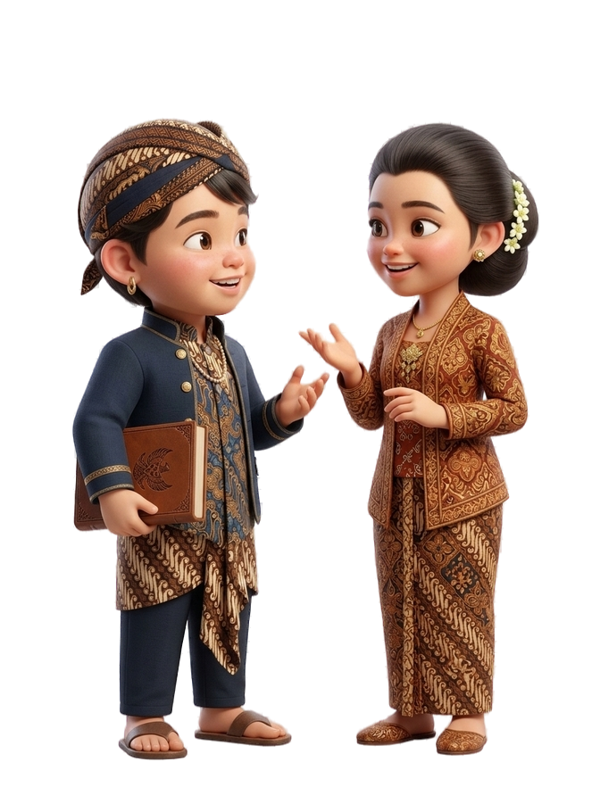

Bahasa Jawa adalah warisan luhur yang mengandung nilai kesopanan, kearifan, dan identitas bangsa. Dengan mempelajari Bahasa Jawa, kita ikut melestarikan budaya serta memperkaya cara berkomunikasi dalam kehidupan sehari-hari.

Bahasa Jawa Ngoko digunakan untuk situasi santai atau informal dengan teman sebaya, sedangkan bahasa Jawa Krama digunakan untuk situasi formal atau sopan kepada orang yang lebih tua dan dihormati.
| No. | Bahasa Indonesia | Bahasa Jawa (Ngoko) | Bahasa Jawa (Krama) |
|---|